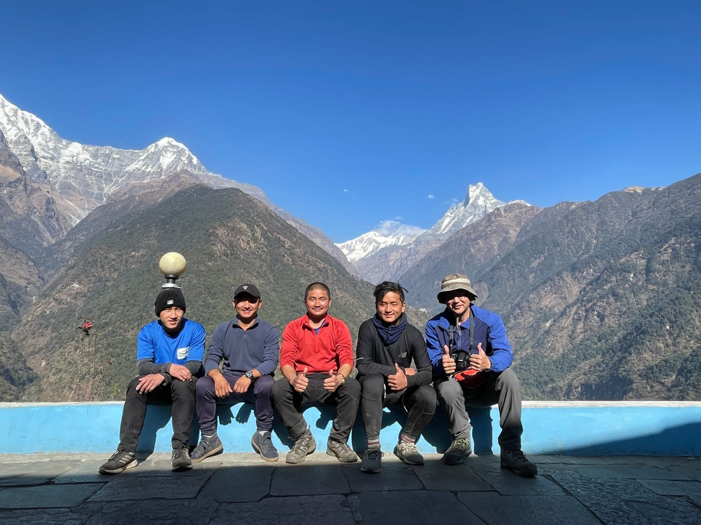
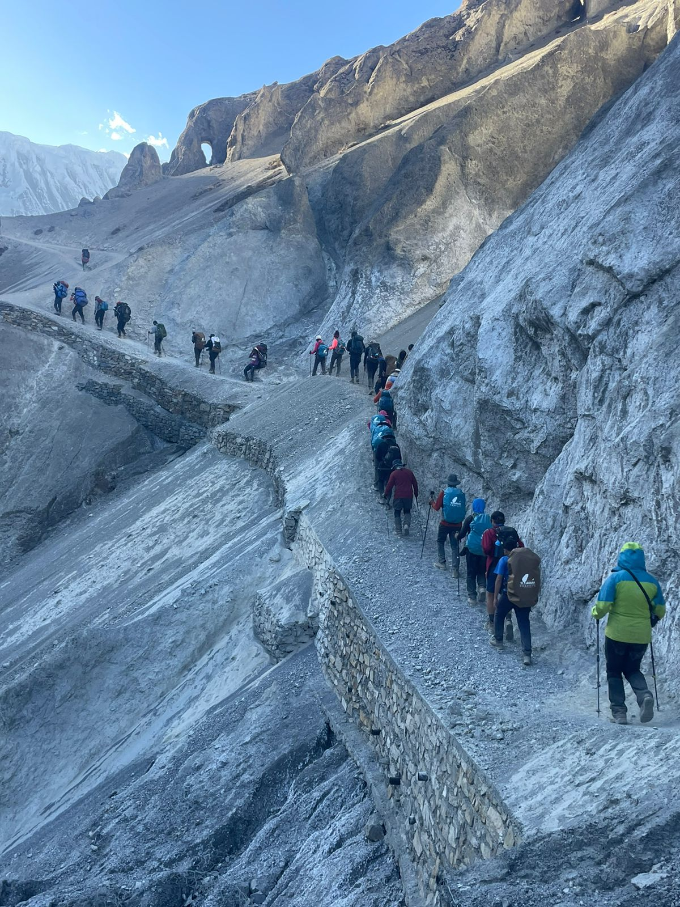
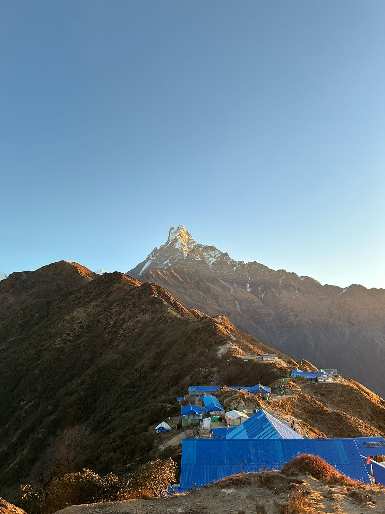
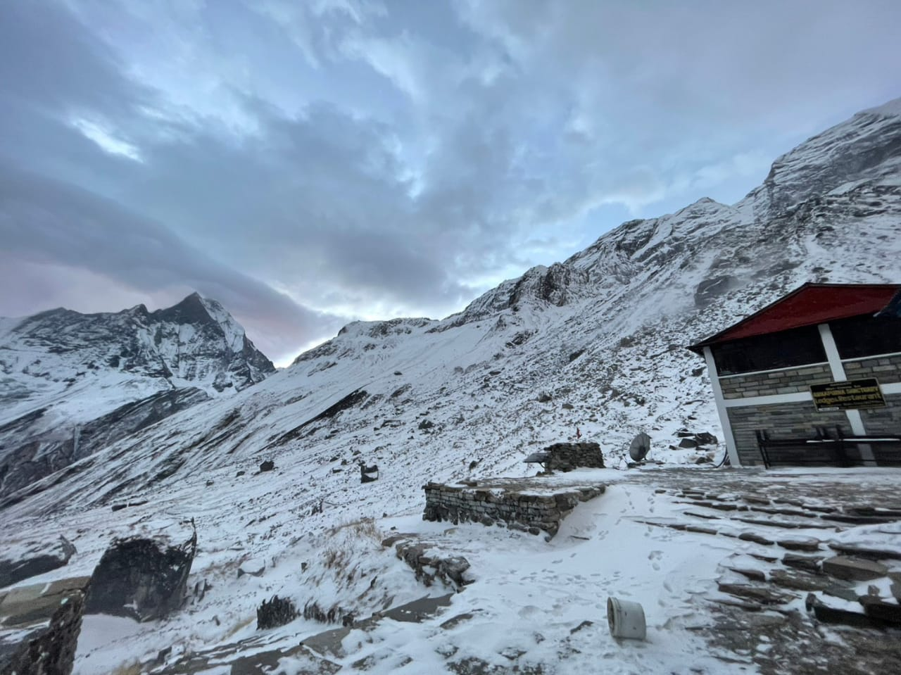

Annapurna Region Treks
Discover the world-famous Annapurna Sanctuary, spectacular rhododendron forests, dramatic mountain passes like Thorong La (5,416m), and sacred Machhapuchhre (Fishtail) peaks.
Find the Right Annapurna Trek
Choose from scenic walks, high passes, alpine lakes, and peak climbing.
Best Treks in the Annapurna Region
Handcrafted itineraries guided by licensed local Sherpa experts.
%20(1366%20x%20900%20px)%20(1366%20x%201000%20px)%20(1366%20x%20768%20px)%20(1366%20x%20768%20px)-3.jpg)


Compare Annapurna Treks
See how each trek differs in terms of experience, terrain and highlights.
| Trek | Experience | Terrain | Main Highlights |
|---|---|---|---|
| Annapurna Base Camp Luxury | Sanctuary Luxury | Moderate | ABC (4,130m), 5-star hotels, Ghandruk lodge, domestic flights |
| Annapurna Base Camp | Classic Sanctuary | Moderate | ABC (4,130m), Fishtail, Hot springs |
| Annapurna Circuit | Loop Circuit | Challenging | Thorong La (5,416m), Muktinath, Manang |
| Ghorepani Poon Hill | Short Sunrise | Easy to Moderate | Poon Hill (3,210m), Rhododendron forests |
| Mardi Himal | Ridge Scenic | Moderate | Mardi High Camp (3,580m), Fishtail view |
| Tilicho Lake | Alpine High Lake | Challenging | Tilicho Lake (4,919m), Thorong La |
| Khopra Danda | Off-beat Ridge | Moderate | Dhaulagiri panorama, Khayer Lake |
Annapurna Trekking Routes
Explore the key trekking routes and major highlights.
Choose Your Trek by Experience
Match your personal travel style, timeline, and physical goals.

First-Time Trekkers
Poon Hill and Mardi Himal are great starting points.

Alpine Sanctuary Lovers
Annapurna Base Camp puts you inside a 360° amphitheater.

High Pass Challengers
Thorong La Pass (5,416m) is the ultimate circuit challenge.

Short Trip Travelers
Enjoy 5-7 day treks starting right from Pokhara.

Luxury & Comfort Seekers
5-star city hotels, boutique lodges in Ghandruk, and domestic flights on ABC 15-Day Luxury Trek.

Cultural Explorers
Traditional Gurung, Thakali, and Manangi mountain villages.
Why Trek in Annapurna?
- Panoramas of Annapurna I (8,091m), Dhaulagiri & Machhapuchhre
- Vibrant rhododendron flower forests in spring
- Rich Gurung, Magar and Thakali cultural hospitality
- Natural hot springs at Jhinu Danda
- World-famous Thorong La High Pass (5,416m)
- Diverse eco-zones from subtropical valleys to alpine glaciers
Best Time to Trek
Altitude & Safety
Max Altitude: 5,416m (Thorong La).
Daily pulse oximeter monitoring by Sherpa guides and planned acclimatization rest days.
Permits & Regulations
- ACAP Permit (NPR 3,000)
- TIMS Trekkers Card
- RAP Permit (for Nar Phu)
Stay & Food
- Teahouses & mountain lodges
- Dal Bhat, momos, Thakali thali
- Hot showers & Wi-Fi
Getting There
- Drive or 25-min flight to Pokhara
- Private jeep or bus to trailhead
- Daily tourist buses from Kathmandu
Peak Climbing
- Tent Peak (Tharpu Chuli 5,663m)
- Mardi Himal Peak (5,587m)
- Hiunchuli Peak (6,441m)
Frequently Asked Questions
What is the best time to trek in Annapurna?
How difficult is Annapurna Base Camp?
How high is Thorong La Pass on Annapurna Circuit?
Are permits required for Annapurna?
Ready to Plan Your Annapurna Trek?
Get expert advice and a custom itinerary tailored for your next adventure.